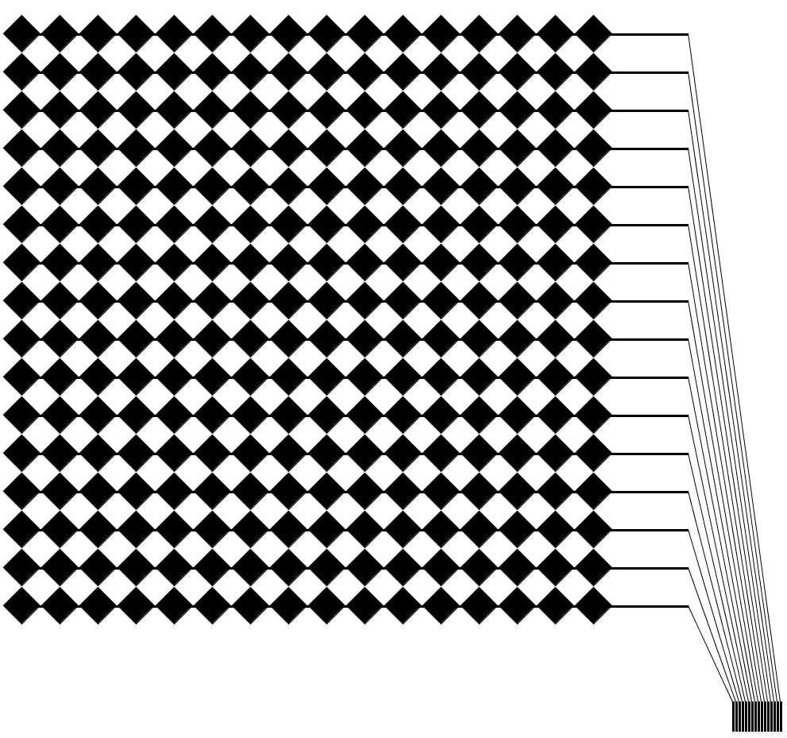

6.810 Engineering Interactive Technologies (fall 2020)
Problem Set Series: Multi-Touch Pad

Problem Set 1
In the first part of the problem set, you are going to do four steps:
- (1) Make the Circuit Drawing
- (2) Inkjet Print your Circuit Drawing
- (3) Assemble the Fabricated Parts of your Multi-touch Pad
- (4) Connect the Multi-Touch wires to a FCP chip
Check before you start: Do you have all the hardware?
Before you get started, check if you have all of the following:
- ESP32 microcontroller
- one multiplexer
- two FPC connectors
- 20 XX ohm resistors
- two transparent sheets for conductive inkjet printing


(1) Processing User Interface for
Generating Fabrication Files
In the first part of this problem set, you will write a user interface in Processing that will automatically generate the fabrication files for making multi-touch pads of different dimensions. In particular, a user will be able to input parameters, such as the width and height of the multi-touch pad and then automatically receive the matching fabrication files, i.e. a 2D drawing of the required circuit in .pdf file format that the user can send to their 2D printer for conductive inkjet printing.
As explained in lecture, your multi-touch pad has two layers that are printed separately.
Each row/column consists of multiple electrodes and has a single wire at the end.
The horizontal row of electrodes is printed on one sheet, the vertical row of electrodes is printed on a second sheet.
Once both sheets are printed, you layer them on top of each other to build the final circuit.


In the user interface, the user should be able to enter:
- the desired number of electrodes in x-direction (default value: 10 electrodes)
- the desired number of electrodes in y-direction (default value: 10 electrodes)
- the size of the electrode in mm (default value: 4mm)
- the spacing between adjacent electrodes in mm (default value: 1mm)
- the thickness of the wires in mm (default value: 0.35mm)
- the spacing of wires on the FPC connector in mm (to find the correct value, measure the FPC connector)
The user interface should only allow the user to input reasonable numbers into the fields:
- for each input field listed above, think about what is a reasonable lower and upper bound (i.e. min/max values)
- write a short explanation why you picked the lower/upper bounds for each field and submit it using this google form
- implement the lower/upper bounds in your user interface, i.e. the user should either not be able to enter values outside the lower/upper bounds (i.e. you only offer a selection of valid numbers) or if your UI allows to enter any value then your user interface should show the user a warning that the value is invalid and reset to the last valid value
Finally, the user interface should have some preview and export functions:
- one checkbox called 'show top layer' and one checkbox called 'show bottom layer', toggling the checkbox should hide/show the respective electrode layers so the layers can be looked at individually
- an export button, which when clicked saves the generated electrodes into two .pdf files (called bottom-electrodes.pdf and top-electrodes.pdf), one for the rows of electrodes (bottom sheet) and one for the columns (top sheet)
- make sure the exported files have all settings correctly set for conductive inkjet printing
You may find it helpful to look at the following Processing classes:
When you are done, it should look something like the images below.
Make sure you test your user interface by exporting several different multi-touch pad sizes, e.g. 4x10, 6x12, 20x20.
insert Dani's updated UI here

(2) Inkjet Print Top and Bottom Electrode Layers
Once your circuit design tool is ready, export a multi-touch pad of 9x8 electrodes from your user interface.
Go to a fabrication office hour to inkjet print your multi-touch pad.
Remember you need to print two sheets, one for column and one for rows.
(3) Assemble Top and Bottom Electrode Layers
Once you printed both sheets, you can glue them together using a thin adhesive foil or spray glue.
(4) Connect to FCP chips
Next, clip on both FCP chips to make sure you got the connection pads right.
say a few words what the FCP chips are for.
(5) Build Multi-Touch Sensing Circuit
Finally, build the sensing circuit.
add schematic here.
Grading
We will give 25 pts in total:
- 5 pts: you finished all for steps of the task.
- 5 pts: circuit design: are all measurements correct, i.e. do the diamonds have the right size, is the spacing correct, do the wires actually connect to the FCP correctly.
- 5 pts: inkjet printing: the print is highly conductive and all columns and rows have a low resistance.
- 5 pts: assembly: did you assemble the layers correctly, are they correctly aligned, are the sheets stacked in the correct way.
- 5 pts: connect to FCP: your multi-touch pad connects correctly to the FCP chips, nothing is misaligned.
Generating Fabrication Files